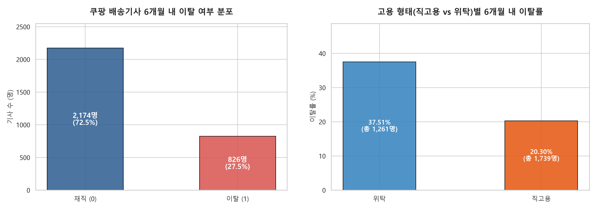
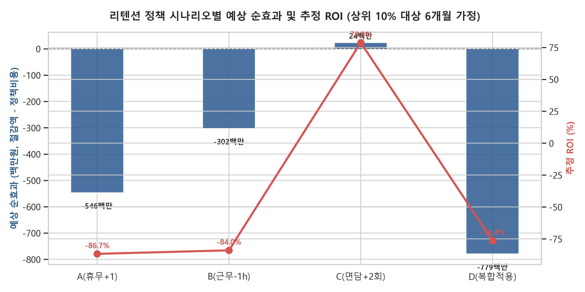

쿠팡 배송기사 이탈 예측과
데이터 기반 리텐션 정책
배송기사 이탈 문제를 단순 소득 인상만으로 해결하기보다, 근무 환경과 관리 지원을 입체적으로 분석하고 머신러닝 고위험군 선별을 통해 비용 대비 효과가 가장 높은 정책을 도출합니다.

프로젝트 주요 실제 시각 자료 갤러리 (Visual Showcase)
실제 분석 보고서에 수록된 핵심 그래픽과 차트들을 카드 형태로 확인하고, 클릭 시 고해상도 원본을 보실 수 있습니다.





30초 Motion Effect 핵심 영상 미리보기
기존에 제작된 30초 키네틱 모션 영상을 웹사이트 메인 화면에서 직접 감상하실 수 있습니다.
프로젝트 핵심 문제 정의: 소득인가, 근무 환경인가?
PBL 가설 검증배송 현장의 높은 이탈률(27.53%)에 대해 인사팀과 현장 관리자는 상반된 시각을 보였습니다. 실제 3,000명의 운용 데이터를 엄밀하게 검증한 결과, 소득 단독 인상은 비용 대비 효과가 가장 낮고 근무 환경(근무시간, 휴무일, 경로 난이도)과 관리자 소통(면담)이 핵심 이탈 동인임이 입증되었습니다.
"소득을 올려주면 이탈을 막을 수 있다"
통계적 실증 결과: 기각.
재직자와 이탈자 간 월 소득 차이는 0.9%에 불과하며 통계적으로 유의하지 않았습니다
(p = 0.140, Cohen's d = -0.062).
What-if 시뮬레이션 결과 소득 10% 인상 시 ROI는 -96.6%로 극히 비효율적입니다.
"근무시간, 휴무일, 관리자와의 면담이 핵심이다"
통계적 실증 결과: 채택.
근속 초기 신입, 1일 10.5시간 이상 장시간 근무, 주당 휴무 1일 이하, 관리자 면담 1회 이하인 집단에서 이탈률이 급격히 상승했습니다.
특히 관리자 1:1 면담 강화 정책은 운영비 3천만 원 대비 ROI +78.8%를 달성했습니다.
전체 배송기사 이탈 현황 (N = 3,000)
이탈률 27.53%전체 3,000명 중 826명이 6개월 내 이탈하였으며, 입사 3개월 이하 신입 기사의 이탈률은 36.6%에 달합니다.
리텐션 정책 우선순위 및 ROI 비교
자세히 보기 →| 정책 시나리오 | 회피 이탈 | 운영 비용 | 순효과 | 추정 ROI |
|---|---|---|---|---|
| C. 면담 +2회 (1순위) | 13.4명 | 3,000만 | +2,364만 | +78.8% |
| B. 근무 -1시간 | 14.4명 | 3억 6,000만 | -3억 240만 | -84.0% |
| A. 휴무 +1일 | 20.9명 | 6억 3,000만 | -5억 4,650만 | -86.7% |
| D. 복합 정책 (A+B+C) | 60.2명 | 10억 2,000만 | -7억 7,900만 | -76.4% |
효과 크기는 복합 정책(60.2명)과 휴무 확대(20.9명)가 크지만, 한정된 예산에서 유일하게 즉시 흑자 ROI(+78.8%)를 내는 정책은 '관리자 1:1 면담 제도화'입니다.
프로젝트 전체 발표 웹사이트 살펴보기
데이터 전처리부터 머신러닝 모델링, What-if 시뮬레이션, E-book 열람 및 30초 Motion Effect를 확인해 보세요.